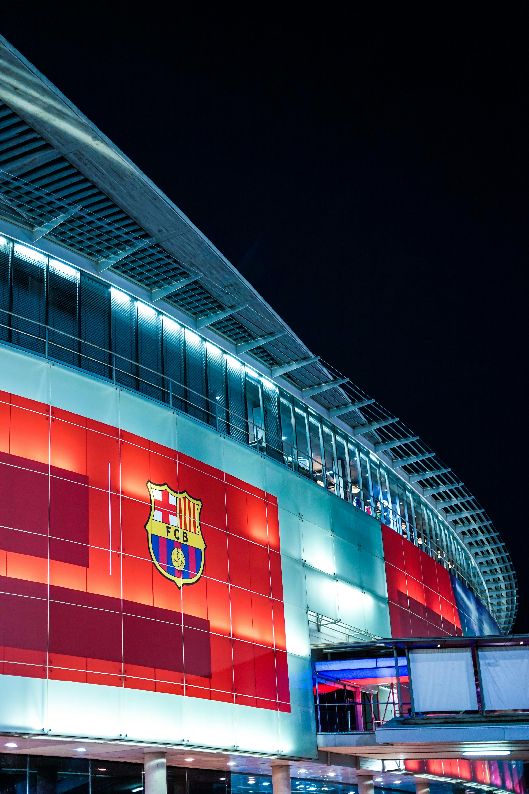

history overview of barcelona fc
FC Barcelona was founded in 1899 by Swiss businessman Joan Gamper, who placed an ad in a local sports
magazine calling for players 1.
The club initially played amateur football in regional competitions until 1910 4.
In 1910, Barcelona entered their first European competition and began their tradition of competing
internationally

On-field Success
Barcelona has won a record 77 domestic and international trophies, including 27 La Liga titles and 5
UEFA Champions League crowns.
The club has produced some of the greatest players in football history, including Lionel Messi, Johan
Cruyff, and Xavi.
Barcelona is one of only three teams never to have been relegated from the top tier of Spanish
football since the league's creation in 1929.